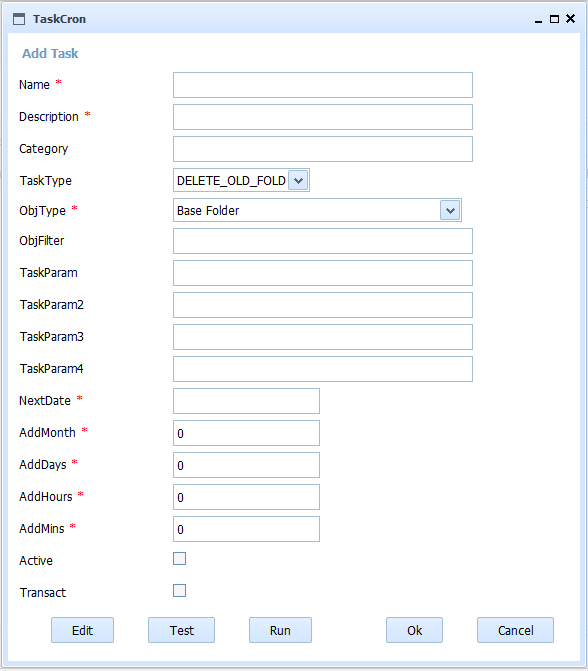
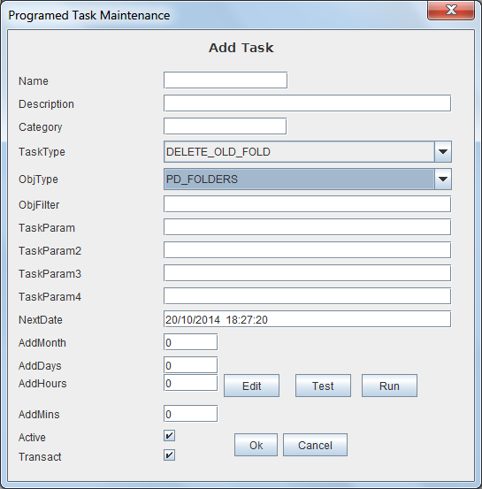

Scheduled Tasks Maintenance
When selected in the form Scheduled Tasks List one of the options to add, delete, modify or copy the task, will appear this form with different fields on or off.
This form contains the information:
- Task Name: Task system identifier whose value can not be repeated or changed once assigned. Itcan have a maximum length of 32 characters. (I.e. "Purge_HR_Exp")
- Task Description: Description for understanding the task. It can have a maximum length of 128 characters. (Eg "Purge Human Resources Files").
For custom developed tasks (CUSTOM) it must contain the PDId identifier of the jar file that contains the development, separated by the character '|' and followed by the name of the class to invoke. Ex: "16f5bdc421e-3fc5fc1b23af2f54|cronexample.CronExample".
- Task Category: Text for grouping and clasifying tasks. It can have a maximum length of 32 characters.
- Kind of Task: Kind of Task. It can be:
- "DELETE_OLD_FOLD": Deletes the folders (and all the objects contained in them) with a specified age,
- "DELETE_OLD_DOC": Deletes (move to trash bin) all the documents with a specified age,
- "PURGE_DOC": Purges/Deletes from the paper bin all the documents with an specified age.
- "IMPORT": Imports automatically from a filesystem,
- "EXPORT": Exports automatically from OpenProdoc to a filesystem,
- "DOCSREPORT": Creates a report about documents of a document type (and subtypes) updated under a folder estructure and saves the report as document html in the home folder of each user of defined group.
- "FOLDSREPORT": Creates a report about folders of a folder type (and subtypes) updated under a folder estructure and saves the report as document html in the home folder of each user of defined group.
- "LOCALSYNC": "Synchronizes" the contents of two complete folder trees (one in OpenProdoc and one in the local computer) so that for each local file a record of the indicated document type is created and referenced (or included according to the type of repository of the Document type) the local file and for each folder on disk an OpenProdoc folder of the indicated type is created.
- "CUSTOM": Custom developed task scheduled.
- Object type (one of Folder or Document types) that apply the task.
- Object filter always * in this version
- Parameters of the task. Depend on task type. The "Edit" button shows a form different depending on task type for easier entry. The meaning of the parameters is:
- "DELETE_OLD_FOLD":
- Param1: Boolean value (0/1) indicating whether the task applies to subtypes or only the type assigned (I.e. "0").
- Param2: Number of days to maintain the folders.(I.e.: For deleting folders older than ten years: "3650")
- Param3: Root folder for the task. All the folder of the specified type under this folder (in any level) will be deleted. Don't include "Rootfolder"(I.e."/Administration/HR").
- "DELETE_OLD_DOC":
- Param1: Boolean value (0/1) indicating whether the task applies to subtypes or only the type assigned I.e.Ej: "0").
- Param2: Number of days to maintain the documents.(I.e.: For deleting documents older than ten years: "3650")
- Param3: Root folder for the task. All the documents of the specified type under this folder (in any level) will be deleted. Don't include "Rootfolder"(I.e."/Administration/HR").
- "PURGE_DOC":
- Param1: Number of days to maintain the documents.(I.e.: For deleting documents older than ten years: "3650")
- "IMPORT":
- Param1: Boolean value (0/1) indicating whether the task should travel recursively by all the folders conatined int the source folder (I.e.: "0").
- Param2: Document Type to by asigned to the imported documents.(I.e.: "FinantialReport")
- Param3: Target folder in OpenProdoc where all the external structure of folders and documents will be recreated. You don't need to include "Rootfolder"(I.e.."/Administration/HR").
- Param4: Source folder from which all the structure will be imported. (I.e."c:\ImporFolder").
- "EXPORT":
- Param1: Boolean value (0/1) indicating whether the task should travel recursively by all the folders contained int the source folder (I.e.: "0").
- Param2: Number of days from updating.(I.e. For exporting the documents inserted during the last week: "7")
- Param3: Source folder in OpenProdoc from which all the structure of folders and documents will be exported. You don't need to include "Rootfolder"(I.e.."/Administration/HR").
- Param4: Target folder where all the structure will be exported. (I.e.."/tmp/NewDocuments").
- "DOCSREPORT":
- Param1: Boolean value (0/1) indicating whether the task should travel recursively by all the folders contained int the source folder (I.e.: "0").
- Param2: Range of days .(I.e. For reporting the documents updated three weeks ago: "21|14")
- Param3: Group of users who will receive the document with the report of new documents (i.e. 2"Suscriptors"). The subgroups will be ignored.
- Param4: Source folder in OpenProdoc. The documents updated under this structure will be inclued in report. You don't need to include "Rootfolder"(I.e.."/Administration/HR").
- "FOLDSREPORT":
- Param1: Boolean value (0/1) indicating whether the task should travel recursively by all the folders contained int the source folder (I.e.: "0").
- Param2: Range of days .(I.e. For reporting the documents updated three weeks ago: "21|14")
- Param3: Group of users who will receive the document with the report of new documents (i.e. 2"Suscriptors"). The subgroups will be ignored.
- Param4: Source folder in OpenProdoc. The documents updated under this structure will be inclued in report. You don't need to include "Rootfolder"(I.e.."/Administration/HR").
- "LOCALSYNC":
- Param1: Boolean value (0/1) indicating whether the task should travel recursively by all the folders contained int the source folder (I.e.: "0").
- Param2: Document Type to by asigned to the imported documents.(I.e.: "FinantialReport"). The Folder type is defined in the task.
- Param3: Target folder in OpenProdoc where all the external structure of folders and documents will be synchronized. You don't need to include "Rootfolder"(I.e."/Administration/HR").
- Param4: Source folder from which all the structure will be imported. (I.e."/ImporFolder"). It's recommended to use the notation '/' and not '\' even for Windows.
- "CUSTOM":
- Param1: Parameter to be interpreted by the developed task.
- Param2: Parameter to be interpreted by the developed task.
- Param3: Parameter to be interpreted by the developed task.
- Param4: Parameter to be interpreted by the developed task.
- Date and time: Date and time of next execution (generation) of the task.
- Months Months between execution (it can be 0)
- Days Days between execution (it can be 0)
- Hours Hours between execution (it can be 0)
- Minutes Minutes between execution (it can be 0, but at least one in Months, Days, Hours or Minutes MUST be not cero)
- Active: Flag indicating whether the task is active (and will be executed) or not.
- Transaccionality: Flag indicating whether the task is transactional (and affect to all the objects or none) or not.

This form includes two additional buttons:Test y Run.
Selecting Test OPD runs a search for the elements that fill the criteria specified (Document type, folders, dates,. ) and shows a list with the elements found so you can check that the criteria is correct and returns the expected set of documents or folders.
This search doesn't apply to operations as import that don't manage existing objects in the repository.
Selecting Run you RUN the task only once with the defined criteria, so beware that you can delete or modify thousands of elements.

View: Scheduled Tasks List
Help Index OpenProdoc